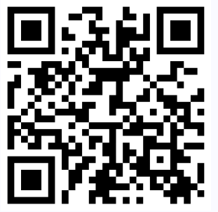

Bienvenue dans notre stand ORANGE à DEVOXX.
Expérimenter de manière ludique les défis des personnes en situation de handicap numérique.
Prenez 5 minutes avec nous pour vous immerger dans notre univers l’accessibilité numérique.
activer le bouton "Aventure aléatoire" pour démarrer, la page s'ouvrira dans un nouvel onglet
1
Pour en apprendre plus sur l'accessibilité numérique, visiter notre site des recommandations en scannant le QRCode ou en copiant l'URL :
https://a11y-guidelines.orange.com/fr/

Vous y trouverez différent contenues :
- Nos incontournables Web, IOS, Android et contenue : c’est la première marche que l’on vous propose de franchir et d’inclure dans votre quotidien.
- Nos recommandations Web, IOS, Android et contenue : notre base de règles d’accessibilité à jours et basé sur les WCAG reformulé pour une meilleure appropriation.
- Nos boîtes à outils : qui vous aideront au quotidien.
- Notre grille d’audit appeler la Va11yDette : pour auditer votre site avec les référentiels WCAG et RGAA.
- Et pour finir notre rubrique article riche de notre veille, de nos tutoriels et d’autre contenue.